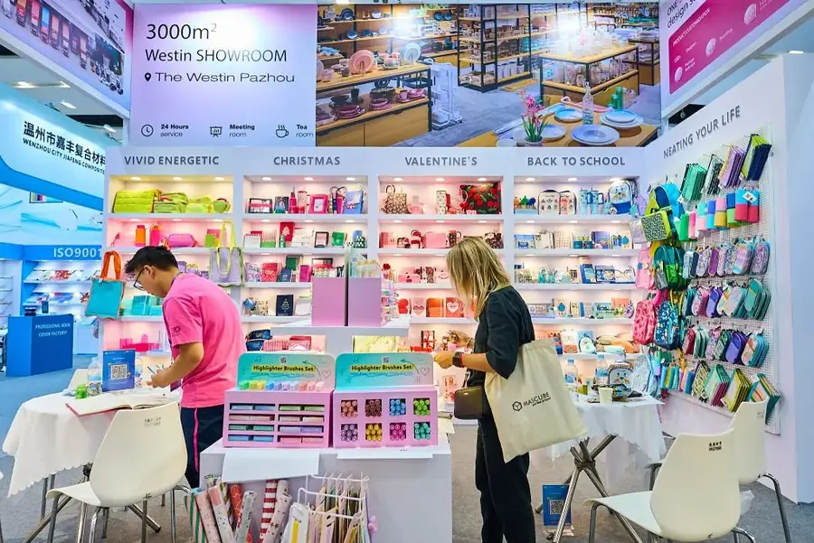

Christmas sourcing · Seasonal retail buying
Christmas Products Sourcing from China: A Buyer's Procurement Plan
A B2B guide to sourcing Christmas decorations, ornaments, gift packaging and lights from China: supplier checks, samples, quality and delivery planning.
Read the buying guide →